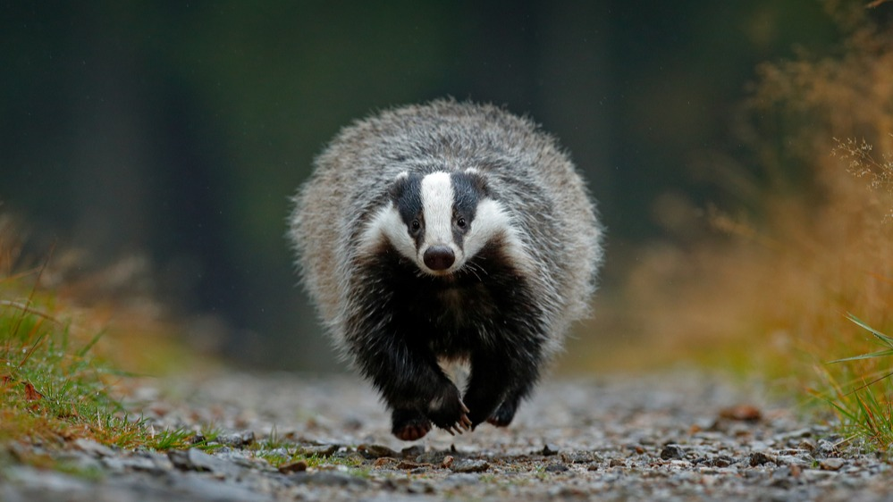

Všežravci
- Všežravec, také omnivor (z lat.) nebo pantofág (z řeč.) je organismus, zpravidla živočich bez specializace na výhradní příjem masité nebo výhradní příjem rostlinné potravy. Trávicí soustava omnivorů je schopna strávit potravu živočišného i rostlinného původu.
- Na poměru množství jednoho druhu potravy oproti druhému nezáleží. Mezi všežravce patří např. slepice, krůta, prase, švábi, škvoři, někteří hlodavci (např. potkan), medvědi a také šimpanz. Člověk se vyvinul jako masožravec, ale stal se z něj všežravec.
- Všežravost se u některých organizmů pravděpodobně vyvinula v dobách, kdy byla nouze o potravu, k jejímuž získávání byl daný organismus primárně biologicky vybaven.

- Vzhledem k jejich široké škále potravin jsou tato zvířata generalisty a oportunisty, protože nejsou specificky přizpůsobena k tomu, aby jedli výhradně zeleninu nebo maso, to znamená, že jejich tělo je připraveno zpracovat všechny druhy potravin, jako jsou bylinky, ovoce, kořeny, houby, hmyz, maso, mršina nebo ryby.
- Z tohoto důvodu mají přechodné vlastnosti mezi masožravci a býložravci, stejně jako jejich čelisti. Tyto kombinují zuby schopné žvýkat rostliny přes silné stoličky, které jim poskytují velkou plochu, a maso přes stoličky a ostré špičáky k trhání.
Příklady
- Primáti mají rádi šimpanze
- Ježci
- Skunkové
- Vačice
- Páv
- Koroptev
- Divoké kachny a labutě.
Více informací o zvířatech naleznete na této stránce.